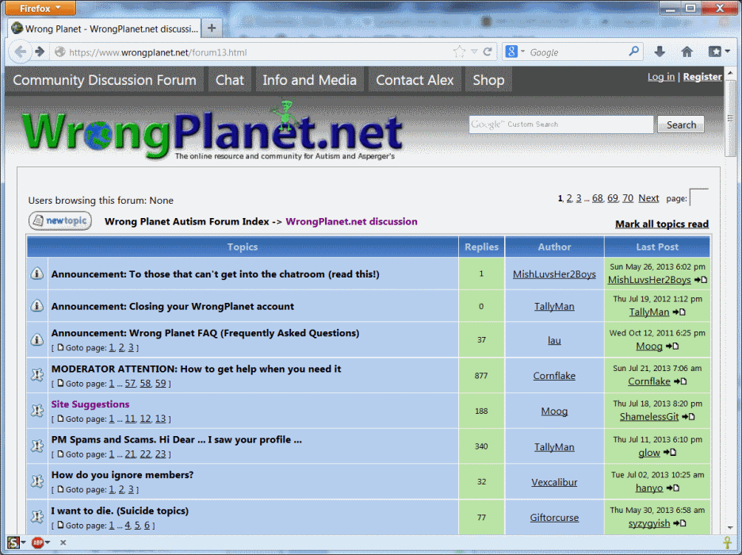

Step 1: Install extensions
Follow each of these links and click Add to Firefox, then restart Firefox
- AdBlock Plus: https://addons.mozilla.org/en-US/firefox/addon/adblock-plus/
- Stylish: https://addons.mozilla.org/en-US/firefox/addon/stylish/
- Lazarus: https://addons.mozilla.org/en-US/firefox/addon/lazarus-form-recovery/
Step 2: Configure extensions
Open Add-ons Manager from the Firefox menu:
{kind=link}
AdBlock Plus
The default filter list (EasyList) is enough to block the ads, but add a custom one to remove more clutter:
- Click Options next to AdBlock Plus
- Click Filter preferences...
- Click Add filter subscription.
- Click Add a different subscription...
- Under Filter list location enter https://raw.github.com/WP-FMX/WP/master/filter.txt (you can leave "Subscription title" blank)
-
Click Add subscription
- Close the AdBlock Plus Filter Preferences dialog and Add-ons Manager tab
{kind=link}
Stylish
Go to http://userstyles.org/styles/90807/wrongplanet-forum-hyperlink-fix and click + Install with Stylish
Step 3: Try it out
Reload WrongPlanet and see the difference! Forum view (note visited links in purple):

{kind=link}
{kind=link}
Topic view (unvisited link in blue):
{kind=link}
{kind=link}
Recovering post text
The Lazarus extension will automatically save everything you type into web forms - it doesn't
need any configuration. To recover the text just right-click inside a textbox and select
Recover Text or Recover Form:
{kind=link}